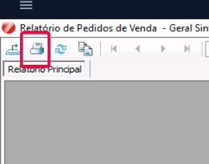
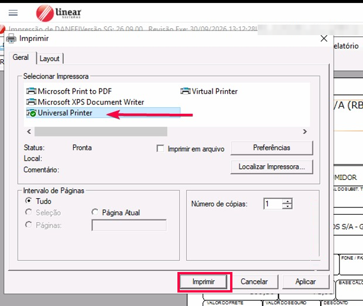
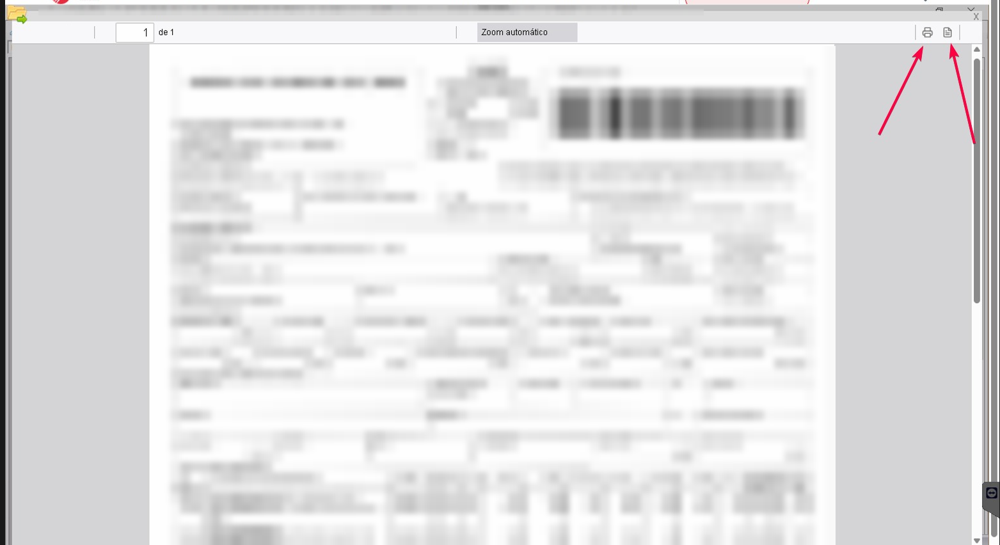
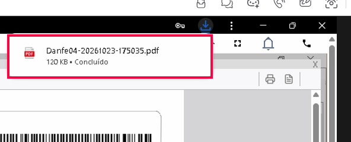
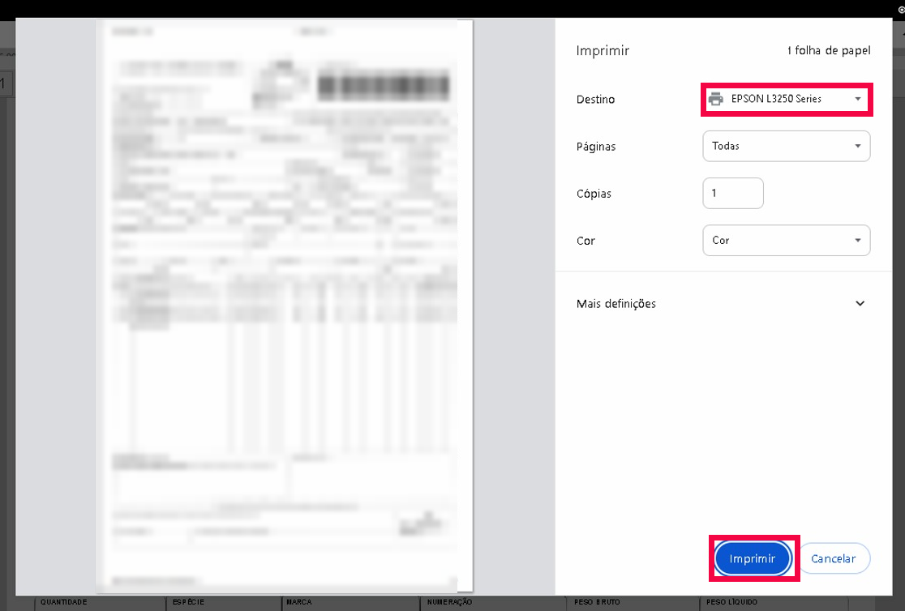

Como baixar ou imprimir no Linear
Veja como salvar um documento (relatório) no computador ou imprimi-lo.
Passo a Passo:
- Passo 1: Clique no ícone da impressora do relatório.
- Passo 2: Sempre escolha a Universal Printer. Depois clique em "Imprimir".
- Passo 3: O documento vai abrir. Olhe os dois ícones no canto direito: ícone de documento (direita) salva no computador; ícone de impressora (esquerda) imprime.



Opção A - Salvar no computador (PDF):
- Passo 1: Clique no ícone de documento, o da direita. O arquivo será baixado.
- Passo 2: Abra a pasta Downloads do computador para encontrá-lo.

Opção B - Imprimir:
- Passo 1: Clique no ícone de impressora, o da esquerda.
- Passo 2: Confira se a impressora escolhida é a correta. Depois clique em "Imprimir".

Nota: Se a impressora estiver errada, clique em "Ver mais..." para achar a sua.